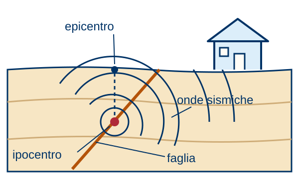

Appunti illustrati · Protezione civile · Secondaria di II grado
Il terremoto
Che cosa succede e come ti proteggi?

In breve
Il terremoto libera energia accumulata nelle rocce lungo una faglia.
L’energia si propaga come onde sismiche.
Non possiamo prevedere quando avverrà: possiamo ridurre i danni.
La sequenza
- Prima: individua i punti sicuri in casa e le vie di fuga.
- Durante, al chiuso: riparati sotto un tavolo robusto o vicino a un muro portante. Proteggi la testa.
- Durante: non correre fuori, non usare scale né ascensore. Aspetta la fine della scossa.
- Dopo: esci con prudenza, indossando le scarpe.
- Poi: raggiungi l’area di attesa. Rientra solo quando le autorità lo consentono.
Cause e conseguenze
- Rottura lungo la fagliaL’energia si propaga in onde.
- Edifici vulnerabiliLo scuotimento può causare danni.
Chi fa cosa
- INGV: Localizza i terremoti e pubblica i dati.
- Regioni: Gestiscono la classificazione sismica.
- Autorità: Indicano quando si può rientrare in casa.
- Cittadino: Prepara kit e piano familiare.
Punto chiave
Non si evita il terremoto: si riduce il danno con prevenzione e preparazione.
Occhio all’errore
- «Corro subito fuori». Durante la scossa cerca riparo e proteggi la testa.
- «I terremoti si possono prevedere». Non esistono segnali premonitori affidabili.
Parole chiave
- Magnitudo
- Misura dell’energia liberata da un terremoto.
- Intensità
- Misura degli effetti su persone, edifici e ambiente.
- Epicentro
- Punto in superficie sulla verticale dell’ipocentro.
- Ipocentro
- Punto in profondità dove si genera il terremoto.
- Area di attesa
- Punto sicuro di raccolta nelle prime fasi dell’emergenza.
Per l’interrogazione
- Perché magnitudo e intensità sono diverse?
- Che cosa fai durante una scossa al chiuso?
- Come riduci il rischio prima della scossa?
Rispondi a voce, scrivi oppure disegna.
Controlla a casa
- Individuo in casa i punti sicuri e le vie di fuga.
- Controllo il kit di emergenza con la famiglia.
- Segno nel piano familiare la nostra area di attesa.
Fonti: Rischio sismico · Idee sbagliate · Glossario.
Manuale · 7.1, rischio sismico · Approfondisci: Prima, durante e dopo.
Testi e disegni: Gruppo Comunale Volontari di Protezione Civile di Genzano di Roma, licenza CC BY 4.0.